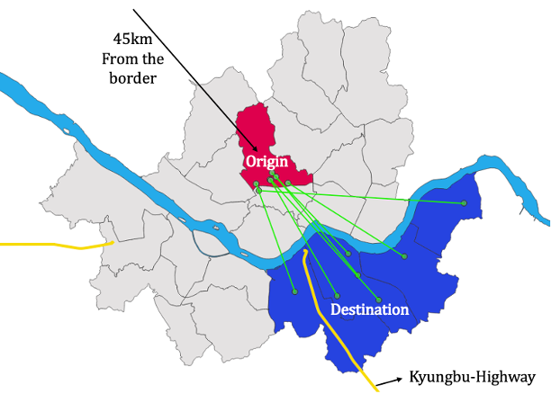

Research
Moving Opportunities? South Korea's Elite High School Relocation (1974–1987)
I explore how access to elite educational institutions can shape spatial differences in segregation and upward mobility when elite positions are disproportionately produced through a narrow educational funnel. I study the forced relocation of elite high schools in South Korea from Seoul's urban core to then-rural suburbs during authoritarian regimes. I first document descriptive evidence that these schools were widely viewed as pathways to success, and then estimate the effects of gaining and losing access on the upward mobility of local residents.


Elite Transmission in Meritocracy: Joseon Korea (1500–1870)
We explore how family history shapes elite transmission even when elite positions are allocated through merit-based selection. We study Joseon Korea, where elites were predominantly produced through a merit-based civil service examination for nearly five centuries. By tracing both the ancestors and descendants of elite bureaucrats, we document substantial lineage gaps in elite transmission, even among bureaucrats who passed the same examination with similar ranks. We then investigate potential mechanisms, such as networks, underlying these differences.